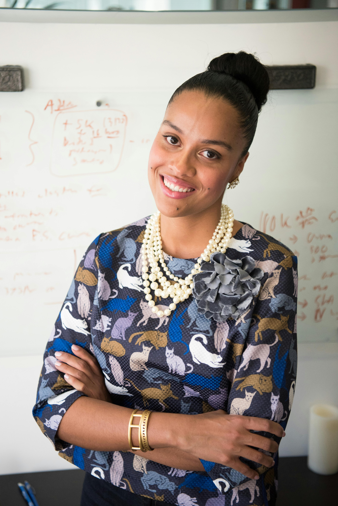

Kenya Children’s Homes (KCH) was established by the Balcraig Foundation in 2002 when the Scottish charity took over the running of the former Thomas Barnardo House in Nairobi. The orphanage is the flagship project of KCH and is home to 60 orphaned, destitute and abandoned children. Since its inception, KCH has grown significantly, extending its support far beyond the reach of the Nairobi orphanage, with the commencement and development of many other community projects throughout Kenya. These projects continue to enrich the lives of many hundreds of Kenyan children and adults every day. Through Kenya Children’s Homes and our associated projects, we help around 400 children in Kenya every year. We have a committed team of Kenyan staff including teachers, house mothers, management and social workers, all of whom have the single goal of providing the best care, protection and education to the children we help. "We are helping the needy children for the betterment of their tomorrow" Beth Waithera, Laundry"
Vice Chairperson Ms.Amina Alexis